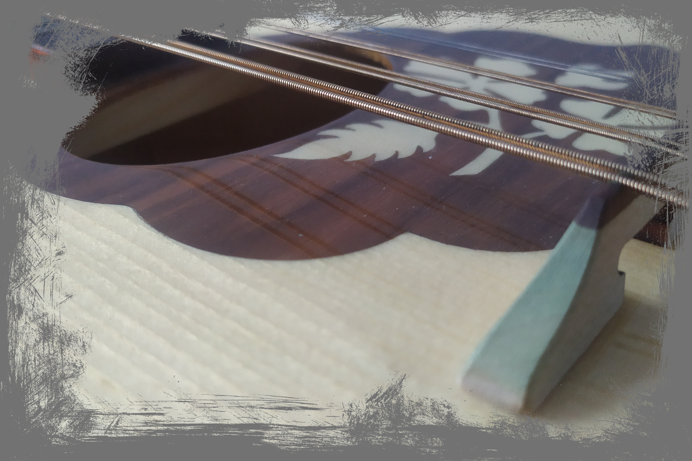
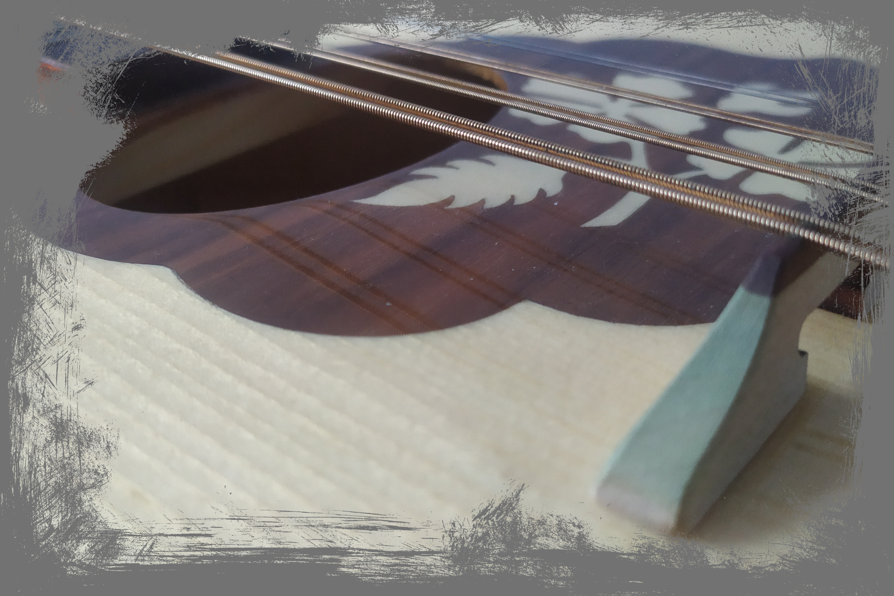

szkoła średnia
Padło na ZSTI w Gliwicach. Właśnie kończę już drugi rok przygody z tą placówką. Mogę z czystym sumieniem stwierdzić, iż jest to ciekawe miejsce.
Padło na ZSTI w Gliwicach. Właśnie kończę już drugi rok przygody z tą placówką. Mogę z czystym sumieniem stwierdzić, iż jest to ciekawe miejsce.
 

Wielką przyjemność sprawia mi muzyka, porządna muzyka. Pragnę tworzyć utwory ambientowe (póki co hobbistycznie), stąd też taki wachlarz instruemntów - od gitar po mandolę. Chcę przearanżować swój pokój w swoiste "home studio". Powinno to być wykonalne. Wstępnie, chciałbym ten cel spełnić gdzieś do początku wakacji.